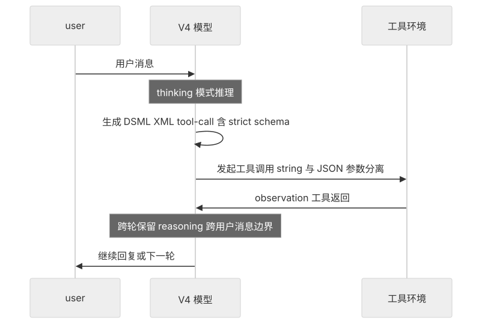

00全景与读法
DeepSeek-V4 系列——V4-Pro（1.6T MoE / 约 49B active，1M 上下文，MIT 开放权重）与 V4-Flash（284B / 约 13B active，1M 上下文，MIT）——约于 2026-04-24 发布，技术报告为 arXiv 2606.19348。它的 agent 能力来自一套两阶段后训练：Stage 1 把数学、竞赛编程、agent / 工具使用、指令遵循等 10+ 个领域专家隔离地各自训练；Stage 2 用 On-Policy Distillation（OPD）把专家合并进一个出货模型。工具侧以 |DSML| + XML 格式、跨轮 reasoning 保留、strict-mode 降低调用失败率。但所有 agent 评测分数都是厂商自报、未独立复现的 provisional 数据，BFCL / tau-bench 类经典工具基准没有 V4 官方数字，第一方 harness 也尚未发布。
每一节固定三段：朴素基线（左栏，灰：不看报告时的直觉实现）/ 它的做法（右栏，橙：V4 实际采取的方案）/ 差在哪（下方色块：差异、原文是否给了理由、对 RL-on-NPU 的含义）。数字与主张按来源分三类标注：第三方 独立测量、自报 厂商 / 作者口径、推断 本站分析。
原文严格区分三类信息，本文全部保留：【已按报道证实 / confirmed-as-reported】来自官方技术报告（arXiv 2606.19348）、HF 模型卡 / 官方博客等一手来源所述——"按报道"指忠实复述一手来源，不等于已被独立复现；【暂定 / provisional】为二手、厂商自报或尚无独立复现的内容；【RUMOR】仅为传言、无一手佐证。本文所有 agent 评测分数均为 provisional。
01系列身份与两阶段总览
自报【已按报道证实】V4-Pro 为 1.6T MoE / 约 49B active，V4-Flash 为 284B / 约 13B active，两者均 1M 上下文、MIT 开放权重，约于 2026-04-24 发布。Stage 1 / Stage 2 的存在与结构已按报道证实；原文对"为什么"的机理解释属常识性原理 + 报道动机，具体内部权衡为 provisional。

这张图怎么读
图的形状是一个先扇出、再扇入的漏斗：单一数据源分成四个具名专家（数学、竞赛编程、agent 工具使用、指令遵循）加一个"其余专家 over ten"的集合节点，再全部汇入 Stage 2 的 OPD 节点。扇出段的每条边都是独立的——专家之间没有横向连线，这就是"隔离训练"在图上的表达。
扇入段只有一个汇合点，说明合并不是逐对进行的，而是所有专家同时作为教师参与同一个学生的蒸馏。终点节点同时写着 V4-Pro / V4-Flash，原文未说明两款模型是否共用同一组专家或分别蒸馏——这是图上看不出、原文也没有回答的问题。
朴素基线
后训练的直觉流程是单一管线：混合所有领域的 SFT 数据，再做一次覆盖所有任务的 RL，用同一组参数同时优化数学、编程、agent 与指令遵循。
它的做法
自报 【已按报道证实】把后训练拆成两个阶段：Stage 1 每个领域独立训练一个专家，Stage 2 用 OPD 把 10+ 个专家合并进一个模型；取代的是 V3.2 的混合 RL 合并（mixed-RL consolidation）。
差在哪差异在于把"学会各领域"与"合并成一个模型"分成两个独立优化问题。原文给出了 V3.2 → V4 的路线变化这一事实，但没有给出两种合并方式在同一基准上的对照数字——两阶段优于混合 RL 的判断建立在报道动机与第 02 节的原理推演之上，不是消融结果。
02不直接联合多任务 RL 的原因：三个结构性问题
把数学、编程、agent、指令遵循纳入同一次 RL 联合优化，会遇到三个结构性问题。（1）梯度相互冲突——数学要求严谨收敛、输出简洁，agent 要求多步探索、容忍中间失败、长程规划，同一组参数被方向相反的奖励同时优化，结果各领域均达不到最优。（2）容量竞争——被实际激活的子网络容量有限，回报高、易优化的领域会挤占容量，把难以优化的 agent / 长程工具使用边缘化。（3）奖励尺度不匹配——可验证任务（数学、单测）能给出干净的 0/1 奖励，难验证任务（工具使用是否恰当、长程任务是否正确）奖励噪声大，混合训练时噪声会污染干净信号或被其淹没。
朴素基线
多任务 RL 的干扰可以通过调节各任务的采样比例与奖励权重解决；只要配比合适，单一管线也能同时达到各领域最优。
它的做法
推断 原文把三个问题定性为结构性：梯度方向冲突不随配比消失；MoE 激活子网络的容量竞争偏向易优化领域；难验证任务的奖励噪声与可验证任务的干净信号在同一次优化里互相干扰。解法是不在同一次优化里放这些领域。
差在哪三个问题里，agent 领域在每一条上都处于不利位置：奖励方向与数学相反、优化难度最高、奖励噪声最大。这解释了为什么两阶段设计对 agent 能力尤其重要——在混合 RL 里它是最容易被边缘化的领域。原文明确标注这些机理解释为常识性原理 + 报道动机，内部权衡的具体数据为 provisional。
03Stage 1：隔离培养专家，工具专家在真实环境做 RL
Stage 1 的解法是将每个领域独立训练：每个专家独享全部容量用于自身领域，不与其他领域竞争参数。自报【已按报道证实】agent / 工具专家在真实工具环境里隔离 RL（no cross-domain capacity competition）——这对 agent 尤其关键，工具调用必须在真实环境里试错，才能学到何时调用、如何解读结果、失败后如何重试。可验证任务用 verifiable rewards / 领域奖励模型 + GRPO，信号干净；难验证任务【provisional 二手】据报道引入 Generative Reward Model（GRM），让 actor 对自身输出评分，缓解缺乏现成验证器的问题。

这张图怎么读
主链是标准的 SFT → GRPO → 专家，其中 GRPO 与"领域奖励模型 / 可验证奖励"之间是双向边——奖励来源是 RL 循环的一部分而非一次性输入，这是 GRPO 类组内比较方法的常规形态。
右侧支链是这张图的重点：agent / 工具专家被单独画出，其奖励来源不是奖励模型而是"对真实工具环境做 RL"，再经"隔离训练——无跨域容量竞争"汇入专家节点。两条链汇合处说明工具专家与其他专家共用同一套 SFT → GRPO 流程，差别只在环境与奖励。图上没有画出的是 GRM：它是难验证任务的奖励来源，原文标为 provisional 二手，因此本站图未将其纳入已证实的主链。
朴素基线
工具使用能力通过 SFT 在静态工具调用轨迹上学习，或在模拟 / 离线记录的工具返回上做 RL；奖励由固定的规则或奖励模型给出。
它的做法
自报 工具专家在真实工具环境里做 RL，且与其他领域隔离，独享全部容量；可验证任务用 verifiable rewards / 领域奖励模型 + GRPO。自报【provisional 二手】难验证任务据报道引入 GRM，由 actor 对自身输出评分。
差在哪"真实工具环境 + 隔离"意味着工具专家的 rollout 是带真实环境往返的多步轨迹，这是 RL 基建里成本最高的负载形态，也是第 09 节 fused MoE kernel 1.96× 直接相关的部分。原文没有给出：专家的具体数量与清单（仅"10+"与四个具名领域）、真实工具环境的构成与规模、GRPO 的组大小与训练步数、GRM 的具体形式——GRM 本身也只是 provisional 二手。
04Stage 2：On-Policy Distillation 无冲突合并
传统离线蒸馏里教师在教师自身的分布上生成输出、学生进行拟合，问题是学生推理时运行在自身的分布上，一旦偏移（exposure bias），学生在自己会出错的状态上从未被纠正过，长程 agent 轨迹的偏差逐步累积；而 10+ 专家风格各异，直接拟合容易合并成风格混杂、各领域均不到位的模型。
自报【已按报道证实（机制）】OPD 让学生生成自己的 on-policy rollout，再从教师（专家）对这些学生自己输出的反馈中学习——相当于"RL 的 on-policy 探索"+"蒸馏的密集 token 级监督"的结合体：学生像 RL 一样自行探索轨迹，但每步获得的不是稀疏奖励，而是教师给出的密集分布级纠正，稳定且信息量大，特别适合长程 agent 轨迹。【provisional 二手】据报道 OPD 用全词表上的 reverse-KL 稳定合并：reverse-KL 是 mode-seeking（寻众数）的，促使学生在每种情境下锁定一个专家的正确做法而非把多专家平均成模糊混合，直接缓解风格混杂的问题；全词表对齐（而非只在采样到的 token）给出更密集、低方差的梯度。【已按报道证实】它取代的是 V3.2 的混合 RL 合并（mixed-RL consolidation）。

这张图怎么读
主循环是四个节点的闭环：学生 → rollout → 教师反馈 → 更新 → 回到学生。rollout 由学生生成是这张图与离线蒸馏的唯一区别，也是"on-policy"的全部含义：教师评价的是学生自己会到达的状态，exposure bias 因此被纠正。
两条虚线是信息分级的图示：V3.2 混合 RL 以虚线指向"更新学生"并标注"被 OPD 替代"，表示的是历史路线而非当前组件；GRM 自评以虚线指向教师反馈节点，表示它只在难验证任务上介入且为 provisional。实线节点里唯一带 provisional 标注的是 reverse-KL——机制已按报道证实，但损失函数的具体形式是二手信息，读图时应把它与已证实的闭环分开对待。
朴素基线
合并多个专家的直觉做法有两种：权重平均 / 模型融合，或让各专家在自身分布上生成数据后做离线蒸馏（序列级 KD）；也可以像 V3.2 那样把各领域放进一次混合 RL 里合并。
它的做法
自报 学生自己生成 rollout，教师专家在学生的状态上给出密集分布级反馈；【provisional 二手】损失为全词表 reverse-KL，mode-seeking 使学生在每种情境下锁定一个专家而非平均；【已按报道证实】取代 V3.2 的混合 RL 合并。
差在哪OPD 与离线蒸馏的差异在状态分布（学生的而非教师的），与混合 RL 的差异在监督密度（分布级而非稀疏标量奖励）。对长程 agent 轨迹这两点同时重要：偏差累积由前者纠正，信用分配的稀疏性由后者缓解。推断 对 RL 基建，OPD 的负载形态与 RL 相同——学生 rollout 加教师前向——因此 rollout 吞吐同样是 Stage 2 的瓶颈。reverse-KL / 全词表细节与 GRM 尚无独立复现。
05工具使用机制：跨轮 reasoning、|DSML| + XML、strict-mode
以下工具机制均为自报【已按报道证实】（来自模型卡 / 报道所述）。

这张图怎么读
三个参与者（user、V4 模型、工具环境）之间的消息按时间自上而下排列。最值得看的是 V4 泳道上的两个 Note：第一个"thinking 模式推理"出现在生成 tool-call 之前，第二个"跨轮保留 reasoning"出现在收到 observation 之后、回复 user 之前——reasoning 的生命周期跨过了 observation 这一边界，而在多数实现里它会在每轮结束时被丢弃。
V4 → 工具环境这条边上的标注"string 与 JSON 参数分离"是 |DSML| + XML 格式的核心：字符串参数与结构化参数走不同的表示。V4 → V4 的自环"生成 DSML XML tool-call 含 strict schema"对应 strict-mode。三项机制在一轮里各占一个位置：strict-mode 约束生成，XML 格式约束传输，跨轮 reasoning 约束记忆。
跨轮 reasoning 保留（cross-turn reasoning retention）：V4 在对话含工具调用时，把 reasoning（思考链）跨用户消息边界保留。典型 agent 循环是"提问 → 思考 → 调工具 → 读结果 → 再思考 → 再调工具"，很多实现每轮都丢弃上一轮思考、每次重新推导任务目标。跨轮保留意味着模型在第 N 次工具调用时仍记得最初的计划、已排除的假设、上一步为何失败，这对长程多步任务是连贯规划与避免重复犯错的关键，也减少反复重建上下文的 token 浪费。
|DSML| + XML 工具格式：V4 引入一个 |DSML| 特殊 token，配合基于 XML 的工具调用格式，核心优势是把"字符串参数"和"JSON 参数"分开表示。传统 JSON-in-string 做法把整个调用置于一个 JSON 中，参数值里若再含代码、引号、换行、JSON 片段就要层层转义（\"、\\n……），模型在长字符串里极易在转义层数上出错，导致解析失败 / 工具调用失效——这是 agent 实际应用中最常见的失败模式之一。XML 格式下，字符串参数（如一大段代码 diff）可原样放进标签不必转义，只有真正需要结构化的部分才用 JSON，转义类失败显著减少。
| JSON-in-string | V4 的 |DSML| + XML | |
|---|---|---|
| 字符串参数（含代码 / 引号 / 换行） | 需多层转义，易错 | 标签内原样承载，基本免转义 |
| 结构化 JSON 参数 | 与字符串混在一个 JSON，边界模糊 | 字符串 vs JSON 显式分离 |
| 典型失败模式 | 转义层数错 → 解析失败 | 转义类失败大幅减少 |
strict-mode function calling：V4 支持严格模式函数调用，输出严格遵循给定 JSON schema（字段名、类型、必填项、枚举值），约束生成空间，使工具调用一定 schema-valid，下游可直接可靠解析执行，省去一层容错 / 纠错。此外 V4 同时提供 Anthropic 兼容与 OpenAI 兼容两套接口，以及 thinking / non-thinking 两种模式。
朴素基线
工具调用以 JSON-in-string 表示，每轮结束后丢弃思考链，schema 合规性由下游解析器容错处理；接口遵循单一厂商风格。
它的做法
自报 【已按报道证实】|DSML| 特殊 token + XML 把字符串参数与 JSON 参数分离；reasoning 跨用户消息边界保留；strict-mode 保证输出 schema-valid；同时提供 Anthropic 与 OpenAI 兼容接口、thinking / non-thinking 两种模式。
差在哪三项机制针对的都是失败率而非能力上限：转义错误、重复推导、schema 不合规是 agent 部署中最常见的三类失败。原文对减少幅度只有定性描述，没有转义类失败率或调用成功率的数字。推断 对 RL：跨轮 reasoning 保留意味着 rollout 的上下文随轮数单调增长，长程任务的 KV 与序列长度压力更大；strict-mode 则使 RL 环境的工具解析器可以更简单。
06Agent 评测分数对比
自报【全部 provisional】下表所有数字均为厂商自报、无独立复现，型号为 V4-Pro-Max；比较对象的数字同样为 provisional。空格"—"表示该对照模型在此基准上没有可引用的 provisional 数字，并非 0 分。
| 基准 | DeepSeek V4-Pro-Max | Opus-4.6-Max | GPT-5.4-xHigh | Gemini-3.1-Pro |
|---|---|---|---|---|
| SWE-bench Verified | 80.6 | 80.8 | — | 80.6 |
| Terminal-Bench 2.0 | 67.9 | — | 75.1 | — |
| MCPAtlas（Public） | 73.6 | 73.8 | — | — |
| Toolathlon | 51.8 | — | 54.6 | — |
| SWE-bench Pro | 55.4 | — | — | — |
朴素基线
把表中数字读作模型能力的横向排名：V4-Pro-Max 在 SWE-bench Verified 上与 Opus-4.6-Max、Gemini-3.1-Pro 并列，因而"追平第一梯队"。
它的做法
自报 原文的总体判断：V4-Pro-Max 在 SWE-bench Verified / MCPAtlas 上与 Opus-4.6-Max、Gemini-3.1-Pro 基本同档，在 Terminal-Bench 2.0 / Toolathlon 上落后于 GPT-5.4-xHigh；但上述均为自报数据，且 BFCL / tau-bench 类经典工具基准没有 V4 官方数字可比。
差在哪表的读法有三个限定：每行的对照模型不同（五个基准里没有一行四个模型齐全），不能得出统一排名；分数在第三方 harness 下取得（第 07 节），harness 质量是分数的一部分；经典工具基准缺位——BFCL 与 tau-bench 是工具调用能力最直接的量表，恰恰没有 V4 数据，tau2 的流传数字属 V3.2。"同档"结论只在自报数与所列基准范围内成立。
07第一方 harness 缺位：现状与使用方式
自报【已按报道证实】DeepSeek 目前没有第一方的 agent harness 产品。它把 agent 拆成 Model + Harness = Agent，并正在招聘一个 "Harness team"。即 V4 当前的定位是"作为模型 drop-in 进第三方 harness"，而非自带 agent 应用。

这张图怎么读
"Agent"节点有两条实线入边（Model、第三方 Harness）和一条虚线入边（自家 Harness，标注"规划中"）。实线与虚线的对比就是现状：今天能运行的 agent 都由第三方 harness 构成。Model → Harness 之间的边标注"Anthropic 兼容 API base url deepseek anthropic"，说明接入方式是 API 层的兼容而非 harness 层的定制。
Model 节点内写着"V4-Pro 主 / V4-Flash 子代理"，对应官方推荐的主循环与子 agent 分工。把这张图与第 06 节的表合看：表中分数产生于图中实线路径，因此分数里含有 Claude Code / OpenCode 这类第三方 harness 的贡献——这与 D07 中 MiMo Code 的读榜须知是同一类问题，方向相反：MiMo 的分数含自家 harness 加成，V4 的分数受制于他人 harness 的质量。
使用方式：【已按报道证实】通过 Anthropic 兼容端点将 V4 以 Claude 兼容方式接入现有 harness。官方提供 Claude Code 与 OpenCode 的接入指南。典型搭配是 deepseek-v4-pro 跑主循环（规划、关键决策）、deepseek-v4-flash 跑子 agent（并行子任务 / 检索 / 工具调用），兼顾能力与成本 / 延迟。
朴素基线
旗舰实验室发布 agent 模型时同步发布自家 harness（如 Claude Code），模型与 harness 协同调优，评测在自家 harness 下进行。
它的做法
自报 【已按报道证实】不提供第一方 harness，以 Anthropic 兼容端点接入 Claude Code / OpenCode；主循环用 V4-Pro、子 agent 用 V4-Flash；Harness team 在招聘中。
差在哪原文的提示是关键：正因为没有第一方 harness，agent 表现很大程度取决于所用 harness 的质量（上下文管理、工具集、重试逻辑），第 06 节的评测分数也是在第三方 harness 下取得的 provisional 结果。推断 这一缺位对 RL 研究反而是便利：V4 的 agent 能力可以在任意开源 harness 下测量，没有厂商 harness 的耦合项；但也意味着训练时使用的工具环境与部署时的 harness 不一定一致，原文未说明两者的关系。
08从 MTP 到 DSpark：服务侧
自报【已按报道证实】服务侧，V4 保留 Multi-Token-Prediction（1 个 MTP head）做投机解码，作为 MTP-1 baseline。这条线的后继方案是 DSpark——即 Dispatch 15 展开讨论的那套更激进的投机 / 并行解码框架。V4 发布时采用的仍是相对保守的单 MTP head 投机解码，而 DSpark 是 DeepSeek 在 serving 侧的下一步演进方向；agent 场景对低延迟、高吞吐的需求（尤其是密集的工具调用往返与 rollout）正是 DSpark 这类方案面向的负载。
朴素基线
agent 的延迟由模型规模决定，减少延迟只能换更小的模型（如全程用 V4-Flash）。
它的做法
自报 V4 发布时以 MTP-1 做投机解码；DSpark 作为后继，在 D15 中相对 MTP-1 报告 per-user +60%～85%（Flash）/ +57%～78%（Pro），且以负载感知调度面向高并发。
差在哪这一节把 D16 与 D15 连成一条线：agent 的工具调用往返是 decode-heavy 的服务负载，与 RL rollout 同构；MTP-1 是 V4 发布时的服务基线，DSpark 是同一负载上的下一步。原文未给出 V4 服务侧 MTP-1 的具体接受率或吞吐数字，D15 谱系表中 MTP-1 的"约 1.8× TPS"为 provisional。
09对 RL-on-NPU 的意义：已证实与传言
agent 能力的形成高度依赖 RL，而 RL 的 rollout 吞吐又高度依赖底层硬件与 kernel。此处需严格区分"已证实"与"传言"。
自报【已按报道证实】V4 的 Expert-Parallel（EP）方案在 NVIDIA GPU 与华为 Ascend NPU 上均验证过——这是 EP 的双平台验证，意味着 V4 的 MoE 推理 / 服务并不绑定单一硬件栈。其 fused MoE kernel 在延迟敏感的"RL rollouts / 高速 agent serving"（即 rollout / 推理侧）上声称 1.96× 加速。结合 Stage 1 中"agent 专家在真实工具环境里做 RL"的设定，这个 1.96× 直接关系到 agent RL 的迭代速度：rollout 越快，真实工具环境里的试错回合就越多、成本越低。
【RUMOR，非一手证实】"V4 的 RL 训练跑在 Ascend 950PR 上"仅为传言。MindSpeed-RL / slime-ascend 这类昇腾 RL 训练栈确实存在，但未确认就是 V4 实际所用——EP 的双平台验证只覆盖到 rollout / serving 侧，不能据此推断训练侧也在昇腾。
朴素基线
看到"EP 在 Ascend 上验证"与"昇腾 RL 训练栈存在"两条信息，直觉推论是 V4 的 RL 训练在昇腾上完成。
它的做法
自报 【已按报道证实】的只有 rollout / serving 侧：EP 的 GPU + NPU 双验证、fused MoE kernel 在 RL rollouts / agent serving 上 1.96×。【RUMOR】训练侧跑在 950PR 上无一手佐证；MindSpeed-RL / slime-ascend 存在不等于被 V4 采用。
差在哪已证实与传言的边界正好落在 rollout / serving 侧与训练侧之间。对本站最有价值的是已证实部分：V4 的 MoE rollout 路径在 Ascend 上被官方验证，且 1.96× 的口径明确指向 RL rollouts——这是 D02 rollout 瓶颈在昇腾上的一个直接数据点。但 1.96× 为自报、无对照基线细节；训练侧硬件未确认，本站不采信 950PR 传言。
10总表：朴素基线 vs 它的做法
| 主题 | 朴素基线 | 它的做法 · 差在哪 · 信息分级 |
|---|---|---|
| 后训练结构 | 单一管线混合 SFT + 一次多任务 RL | Stage 1 隔离专家 → Stage 2 OPD 合并，取代 V3.2 混合 RL。已按报道证实；无两种合并方式的对照数字 |
| 不联合 RL 的原因 | 调配比与奖励权重即可 | 梯度冲突、容量竞争、奖励尺度不匹配三个结构性问题；agent 在每条上都处于不利位置。常识性原理 + 报道动机 |
| Stage 1 | 静态轨迹 SFT 或模拟环境 RL | 每专家独享容量；工具专家在真实工具环境隔离 RL；可验证任务 verifiable rewards + GRPO。GRM 自评为 provisional 二手 |
| Stage 2 | 权重平均或离线蒸馏 | 学生 on-policy rollout + 教师密集分布级反馈；reverse-KL 全词表（provisional 二手）mode-seeking 锁定单一专家 |
| 工具机制 | JSON-in-string、每轮丢弃思考、下游容错 | |DSML| + XML 分离字符串 / JSON、跨轮 reasoning 保留、strict-mode；Anthropic / OpenAI 兼容。已按报道证实；无失败率数字 |
| 评测分数 | 读作横向排名 | SWE-bench Verified 80.6 / MCPAtlas 73.6 同档，Terminal-Bench 2.0 67.9 / Toolathlon 51.8 落后 GPT-5.4-xHigh；全部 provisional；BFCL / tau-bench 无 V4 数据 |
| harness | 自家 harness 同步发布 | 无第一方 harness，经 Anthropic 兼容端点接入 Claude Code / OpenCode；Pro 主、Flash 子；分数含第三方 harness 贡献 |
| 服务侧 | 减延迟只能换小模型 | V4 发布时 MTP-1 投机解码，DSpark 为后继（D15） |
| RL-on-NPU | 推断训练在昇腾 | 已证实：EP GPU + NPU 双验证、fused MoE 1.96×（rollout / serving 侧）；RUMOR：训练跑在 950PR |
11原文没给的东西
以下是复现或独立评估时必须自行确定、原文未提供理由或未经独立复现的内容——引用时应保留限定语：
- 专家清单与数量：仅"10+"与四个具名领域（数学、竞赛编程、agent / 工具使用、指令遵循），完整清单未给；V4-Pro 与 V4-Flash 是否共用同一组专家未说明；
- Stage 1 训练细节：真实工具环境的构成与规模、GRPO 的组大小与步数、领域奖励模型的形式均未给；
- GRM（Generative Reward Model）：provisional 二手，具体形式与适用范围未经独立复现；
- OPD 的损失函数：reverse-KL / 全词表对齐为 provisional 二手，尚无独立复现；两阶段相对 V3.2 混合 RL 合并的对照数字未给；
- 工具机制的量化效果：转义类失败率、调用成功率、跨轮 reasoning 对长程任务的增益均无数字；
- Agent 评测：全部为厂商自报、无独立复现，型号为 V4-Pro-Max；BFCL、tau-bench / tau2-bench 无 V4 数据（流传的 tau2 数字为 V3.2）；SWE-bench Multimodal 未报告；评测所用第三方 harness 未指明；
- 训练时工具环境与部署时 harness 的关系：原文未说明；
- fused MoE kernel 1.96×：自报，对照基线与测量条件未给；
- RL 训练硬件："跑在 Ascend 950PR 上"为 RUMOR，训练侧硬件未确认；
- 本文无原图：DeepSeek-V4 的公开仓库（GitHub raw）在本站网络代理下不可达或无 README 配图，技术报告（arXiv）与 HF 模型卡的配图未能获取，全部图为本站图。
12可搬走的判断与后续关注
一、agent 能力的后训练要先隔离、再合并。agent 在梯度方向、优化难度、奖励噪声三条上都是混合 RL 里最容易被边缘化的领域；V4 的两阶段设计把"学会"与"合并"拆成两个优化问题，合并阶段用 on-policy 蒸馏而非再一次 RL。这是工程哲学层面的可迁移结论，具体损失形式仍为 provisional。
二、工具调用的失败率与能力上限是两个独立指标。|DSML| + XML、跨轮 reasoning、strict-mode 三项都作用于失败率；在评估或构建 agent RL 环境时，应把格式解析失败与任务失败分开计数，否则奖励信号会把格式噪声计入能力。
三、rollout 侧的昇腾验证不等于训练侧。V4 已证实的是 EP 在 GPU + NPU 的双平台验证与 rollout / serving 侧 1.96×；这是国产栈上 MoE rollout 的一个官方数据点，但训练侧硬件是传言。引用时应把两侧分开。
BFCL / tau-bench 上的 V4 官方数字是否出现，以及任何独立复现 · DeepSeek Harness team 的第一方 harness发布，及其对第 06 节分数的影响 · OPD 的 reverse-KL / 全词表细节与 GRM的一手来源或独立复现 · V4 训练侧硬件的任何一手披露，用以判定 950PR 传言 · DSpark 在 V4 agent 服务上的部署（D15）。